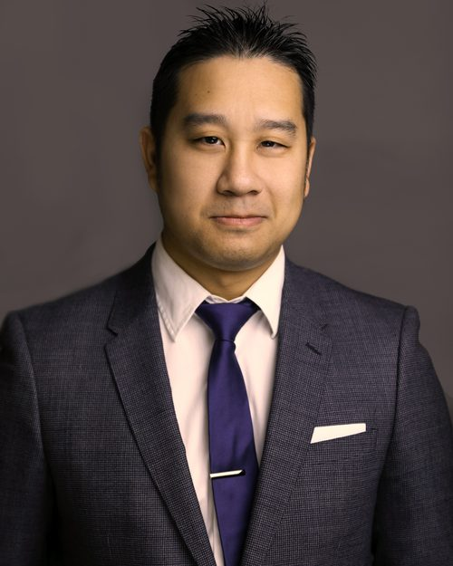
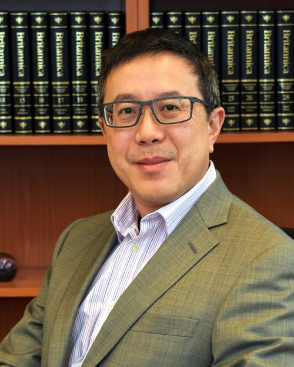

Financial Planning Should Bring Clarity, Not Complexity
You’ve built a successful business and meaningful wealth. As you look toward the next stage, the questions begin to change—from how to grow what you have to how to protect it, make it work for the life ahead, and ultimately pass it on well.
That’s where I come in.
My role is to step back and look at your entire financial landscape—your investments, corporation, retirement plans, insurance and estate planning—and help you understand how the pieces work together.
Sometimes the path forward is straightforward. Other times, there may be strategic opportunities you simply haven’t been shown yet. Either way, my commitment is the same: cut through the jargon, explain your options clearly, and help you make informed decisions with confidence.
Meet Taayla Mark
CFP®, CLU®, CHS™ | Principal Financial Planner
What drives my work isn't just helping clients grow their net worth. It's helping them understand what the wealth they've already built can make possible.
Wealth creates options, but it also brings decisions that become increasingly important over time—about retirement, tax exposure, and what you ultimately want to leave behind.
My approach is simple: see the whole picture, evaluate the options thoughtfully, and move forward with confidence.
Outside the office, I spend my downtime with a good book, a good movie, and my two dogs and cat close by. My faith is central to who I am, and it shapes how I show up for my clients — with patience, honesty, and genuine care.
Our Team
Engrace Team
While every client relationship starts and stays with me personally, I don't work alone. Behind the scenes, a team helps keep things running smoothly — and as Engrace grows, that's expanding into a boutique of associate financial planners working alongside me.
Bonnie Jang
Operations Manager
Bonnie is Engrace’s resident jack-of-all-trades—and after more than 20 years working across virtually every area of her business, that description fits.
She holds a B.A. in Government from Harvard, an International Business diploma from Niels Brock Copenhagen Business College, and a Computer Programming diploma from the Institute for Computer Studies. She is also a certified BodyTalk practitioner, reflecting a longstanding interest in supporting people.
As Operations Manager, Bonnie keeps the day-to-day operations of Engrace organized and moving forward. Her primary areas of focus include life insurance licensing and contracts, regulatory and compliance matters, and life insurance policy administration. She is also often the person the team turns to when no one else quite knows the answer.
Outside the office, Bonnie loves to travel and has lived in both Poland and Denmark.
Janice Marta
Client Operations Associate
Janice is the Client Operations Associate at Engrace, helping keep client activity organized through investment tracking, file management, meeting coordination and transaction follow-up.
She holds a Bachelor of Science from UBC and, in a previous chapter of her career, was a bakery owner and professional pastry chef. She brings the same curiosity and attention to detail to her work at Engrace and is currently building toward her life license, continuing to grow her ability to support clients directly.
Janice approaches new challenges with enthusiasm, a willingness to learn—and a healthy level of suspicion toward Excel spreadsheets.
Outside of work, she manages a lively household of animals and a collection of approximately 30 citrus trees whose fruit she carefully grows, monitors and, for reasons still under review, refuses to eat.
Michelle Ng
Client Care Associate
Michelle is the Client Care Associate at Engrace Financial Solutions, where she helps support clients and the team with the day-to-day details that keep things moving.
She is licensed in insurance and continues to grow her expertise in the field. Before joining Engrace, Michelle worked in customer service within the property management industry. She holds an associate degree in Psychology and is currently building on that foundation with studies in General Business Administration and Accounting at KPU.
Michelle genuinely enjoys helping wherever she can and brings a warm, upbeat and approachable personality to her role.
Outside of work, she can usually be found exploring the world of stationery, diamond painting and webtoons.
Our Team
PROFESSIONALS WE WORK WITH
Good planning doesn’t happen in silos.
Financial decisions can have legal, tax and accounting implications. When appropriate, we work alongside experienced professionals so the different parts of your plan can be coordinated and implemented properly.
Already have professionals you trust? We’re happy to work with them too.
Omar Mohamed
Corporate, Commercial & Estate Lawyer
Omar earned his Juris Doctor from the University of Windsor in 2015 and was called to the Law Society of British Columbia in 2016. Since then, he has focused his practice on helping individuals and business owners navigate corporate, commercial, real estate, family, wills and estates law.
Omar describes his role as the legal craftsman who helps turn a financial blueprint into reality. While Engrace helps clients define their financial goals and explore available strategies, Omar translates those plans into the appropriate legal structures and documents.
His work includes incorporations, corporate reorganizations, trusts, succession planning and estate planning. By working collaboratively with financial, accounting and other professional advisors, Omar helps ensure the legal pieces of a strategy are properly implemented and work together.
Omar believes sophisticated legal advice should still be approachable, practical and easy to understand.
Ask Omar about: how a family trust may fit into a legacy plan, or why business succession planning is better addressed before it becomes urgent.

Jason Ding
Chartered Professional Accountant
Jason Ding is a CPA with more than 15 years of experience helping business owners strengthen the financial side of their companies.
His background spans accounting, tax, financial systems and technology, with a particular focus on helping businesses improve profitability, streamline financial processes and prepare for major transitions such as growth, restructuring or a future liquidity event.
Jason brings a practical, forward-looking perspective to business planning. By working alongside financial and legal professionals, he helps clients understand how their accounting, tax and business decisions fit into the broader picture.
He has been featured in The Globe and Mail and has shared his insights through the Intuit QuickBooks Podcast, Poe Group Advisors’ Accountant Flight Plan, and the Intuit QuickBooks Get Connected 2025 conference.
Ask Jason about: improving business profitability, preparing for a liquidity event, and making sure your accounting and financial systems are ready for what comes next.

Gilbert Chan
Notary Public
Gilbert Chan is a Notary Public with more than 20 years of business experience and a broad background spanning banking, business development, logistics and international business.
Before entering notarial practice, Gilbert worked in a variety of industries and business environments, giving him a practical understanding of the decisions individuals and business owners face as their personal and financial affairs become more complex.
Today, Gilbert helps clients with matters including residential real estate transactions, mortgages, wills, powers of attorney and representation agreements. He brings a practical, detail-oriented approach to his work and places a strong emphasis on making sure clients understand the documents they are signing and the decisions they are making.
Fluent in both English and Cantonese, Gilbert is known for clear communication and a client-focused approach.
Ask Gilbert about: residential real estate, wills, powers of attorney and representation agreements.